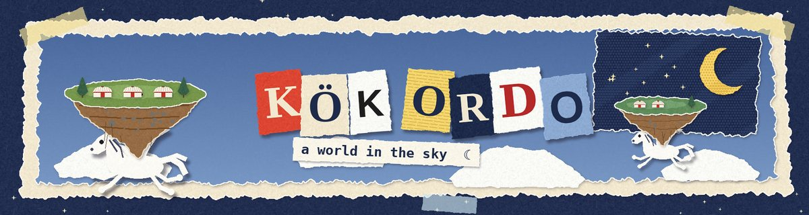
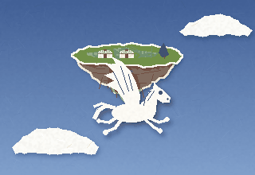
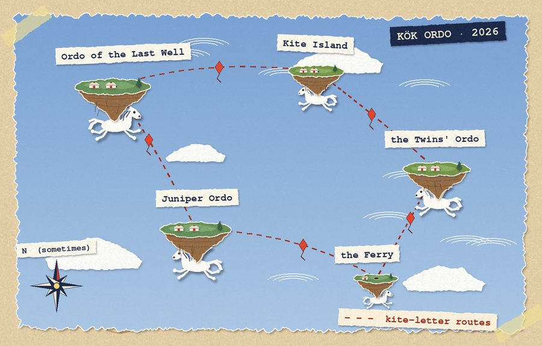
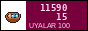

A sky-steppe. Long ago the Long Wind tore the steppe into islands, and the tulpars, the winged horses, took the islands on their backs so they would not fall. Now every clan lives on its own island, floating, slowly moving over the clouds. Once a year the tulpars land, and for one day the islands touch the ground and each other, and people can cross.
The rest of the year you write kite-letters.
I started Kök Ordo in my first year of architecture because I was drawing the same five-storey block every day and I needed somewhere with no blocks. It became a world. It has a map, people, words, weather. It doesn't have a plot. It doesn't need one.

(the map moves every year. this is the map of the year 2026, the Year of the Patient Wind.)
